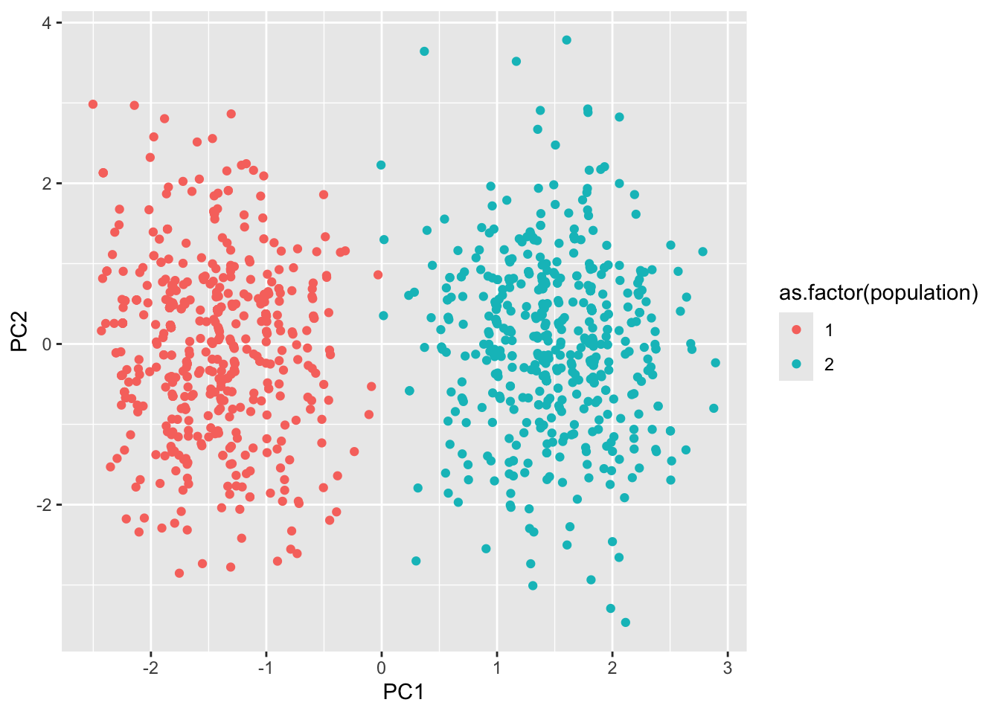
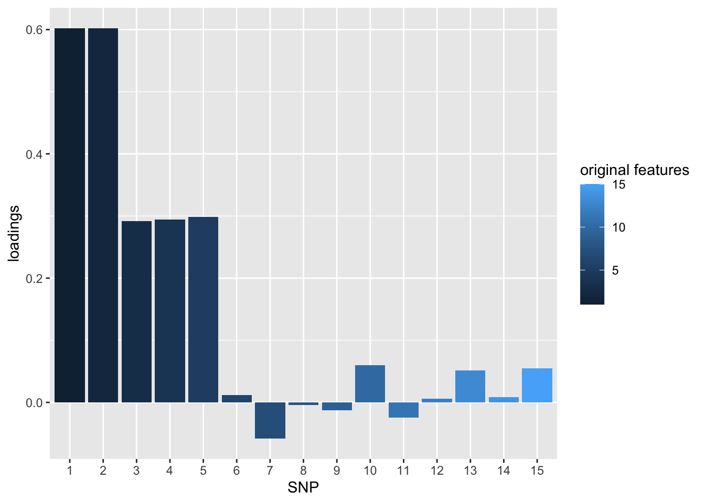
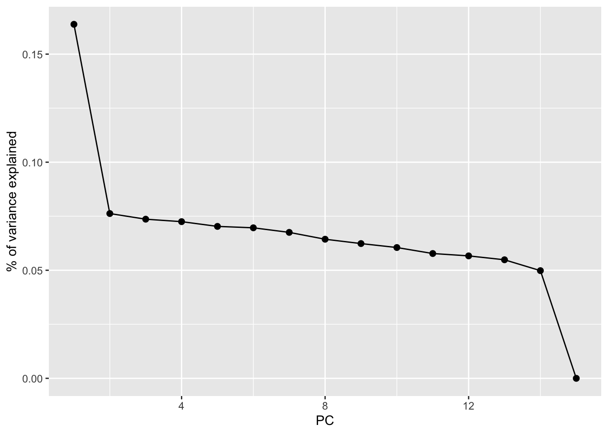
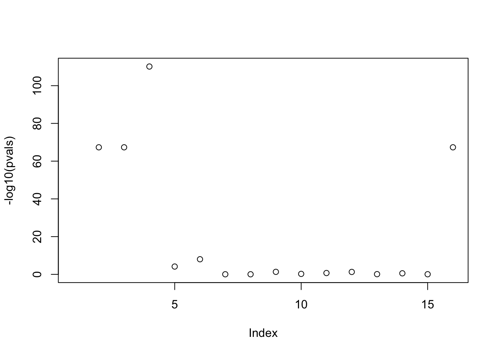

library(tidyverse)
library(broom)
library(dplyr)
library(tidyr)
library(GGally)
library(gridExtra)Principal Component Analysis
Principal Component Analysis in Genetics
What is PCA?
Principal Component Analysis (PCA) is a statistical method used to simplify complex data by reducing its dimensions while preserving as much variation as possible. It creates new variables, called principal components, that capture patterns in the data. These components are ranked, with the first principal component (PC) representing the most variation.
PCA is especially useful for genetic data, where it helps researchers account for confounding variables, like population structure, in genetic studies. By controlling for these variations, PCA improves the accuracy of analyses and results.
In this tutorial, we will first walk through an example showing how application of PCA can improve accuracy of results in a simulated Genome Wide Association Study. Next, there will be an example of applying PCA to real genetic data and code demonstrating common useful visualizations in statistical genetics.
Set Up
Exploring the data
This is data downloaded from Professor Macalester College’s statgen GitHub page that offers many statistical data sets. It contains simulated genetic data of 1,000 individuals and 15 SNPs. Run the following chunks of code to download the data and examine its dimensions and minor allele frequencies.
pcadata <- read_csv('https://mac-stat.github.io/statgen/data/pca_toy_data.csv')dim(pcadata)[1] 1000 17colnames(pcadata) [1] "population" "trait" "SNP1" "SNP2" "SNP3"
[6] "SNP4" "SNP5" "SNP6" "SNP7" "SNP8"
[11] "SNP9" "SNP10" "SNP11" "SNP12" "SNP13"
[16] "SNP14" "SNP15" pcadata %>%
group_by(population) %>%
count()# A tibble: 2 × 2
# Groups: population [2]
population n
<dbl> <int>
1 1 500
2 2 500Minor Allele Frequency (MAF) is the proportion of the less common allele of a genetic variant in a given population. It ranges from 0 to 1, where 0.5 means both alleles are equally common. MAF is important in genetics because it helps identify common and rare variants, which can influence traits, diseases, and population structure. MAF can be used to ensure analyses focus on variants with meaningful frequency differences across populations. Here are the minor allele frequencies for each SNP across the two populations in the study:
pcadata %>%
group_by(population) %>%
summarise(across(starts_with("SNP"), mean, na.rm = TRUE)/2)# A tibble: 2 × 16
population SNP1 SNP2 SNP3 SNP4 SNP5 SNP6 SNP7 SNP8 SNP9 SNP10 SNP11
<dbl> <dbl> <dbl> <dbl> <dbl> <dbl> <dbl> <dbl> <dbl> <dbl> <dbl> <dbl>
1 1 0 0 0.298 0.291 0.293 0.102 0.107 0.094 0.095 0.097 0.107
2 2 1 1 0.512 0.506 0.504 0.11 0.085 0.097 0.092 0.111 0.096
# ℹ 4 more variables: SNP12 <dbl>, SNP13 <dbl>, SNP14 <dbl>, SNP15 <dbl>Some things to notice:
- SNP 1 and SNP 2 only occur in population 2
- SNPs 1 - 5 are distinctly more common in population 2 than 1.
- SNPs 6 - 15 have relatively the same allele frequency in both populations.
Next, we will run a PCA on this data to see if it can help us reduce confounding!
Run PCA
Run the code chunks in order to complete Principal Component Analysis and to reduce the dimensions of the data!
# Remove unnecessary columns
geno <- pcadata %>%
select(-trait, -population)
# use prcomp function to perform PCA
pca_out <- prcomp(geno, center = TRUE, scale = TRUE)In PCA, scores and loadings help interpret the transformation of data into principal components.
PCA Scores are the transformed coordinates of the original data in the new principal component space. Each data point gets a score for each principal component, showing how much it contributes to that PC.
PCA Loadings indicate how much each original variable contributes to a principal component. They show the relationship between the original variables and the new components, helping interpret what each principal component represents. High loadings suggest strong influence on a particular PC.
# Extract scores and loadings
pca_loadings <- pca_out$rotation
pca_scores <- pca_out$xHere is a visualization of the scores of the first two PC’s in the PCA:
pca_scores_pop <- pcadata %>% select(population) %>% bind_cols(pca_scores)
pca_scores_pop %>%
ggplot() +
geom_point(aes(x = PC1, y = PC2, color = as.factor(population)))
As you can see, PCA has distinctly clustered the two populations. There is more variation in the populations across the first PC, as expected, while in the second PC, the scores spread across the same values.
Next, we will plot the loadings of the first PC:
pca_loadings <- pca_loadings %>%
as.data.frame() %>%
mutate(SNP = row_number())
pca_loadings %>%
select(PC1, SNP) %>% # select another PC to visualize its loadings
ggplot(aes(x = as.factor(SNP), y = PC1, fill = SNP)) +
geom_bar(stat = "identity") +
labs(y = "loadings", x = "SNP", fill = "original features")
This loadings plot shows that the first two SNPs contribute the most positively to explaining the variation in the first PC. This is intiutive because the minor allele in the first two SNPs only occurrs in population 2, making occurrence of a minor allele in SNP 1 or 2 an easy way to classify the populaitons.
Finally, we will extract the variance of each PC and calculate the proportion of variance explained by that PC. We will use this to create a visualization that shows the variance explained by each PC which will help us decide how many PCs are important to include in our analysis to reduce confounding.
# extract variance of each PC
pca_var <- (pca_out$sdev)^2
# calculate proportion of variance explained
total_var <- sum(pca_var)
pve <- pca_var/total_var
pca_out$pve <- c(pve)# visualize
pca_out %>%
tidy(matrix = "eigenvalues") %>%
ggplot(aes(y = pve, x = PC)) +
geom_point(size = 2) +
geom_line() +
labs(y = "% of variance explained")
pvals <- c()
genot <- pcadata %>%
select(-population)
# loop through each of the 15 SNPs
for(i in 2:16){
mod <- lm(trait ~ genot[[i]], data = genot) # fit model looking at SNP i
pvals[i] <- tidy(mod)$p.value[2] # record p-value
}
pvals %>%
as.data.frame() .
1 NA
2 4.653548e-68
3 4.653548e-68
4 7.254369e-111
5 7.235763e-05
6 9.853343e-09
7 9.037029e-01
8 8.994217e-01
9 4.700928e-02
10 5.649656e-01
11 1.973304e-01
12 5.209405e-02
13 7.764542e-01
14 2.830780e-01
15 8.623279e-01
16 8.516383e-01mod <- lm(trait ~ genot[[2]], data = genot) # fit model looking at SNP i
pvals[i] <- tidy(mod)$p.value[2] # record p-value
plot(-log10(pvals))
What do you notice? Which SNP(s) have the smallest p-value?
# your code here
pvals2 <- c()
pca_scores1 <- pca_scores %>%
as.data.frame() %>%
select(PC1)
genotpc1 <- pcadata %>%
select(-population) %>%
cbind(pca_scores1)
# loop through each of the 15 SNPs
for(i in 2:16){
mod2 <- lm(trait ~ genotpc1[[i]] + PC1, data = genotpc1) # fit model looking at SNP i
pvals2[i] <- tidy(mod2)$p.value[2] # record p-value
}
pvals2 %>%
as.data.frame() .
1 NA
2 1.196408e-03
3 1.196408e-03
4 5.533146e-65
5 1.294894e-09
6 1.269065e-04
7 8.029461e-01
8 6.302838e-02
9 1.018708e-02
10 7.965256e-01
11 6.224918e-01
12 1.310520e-01
13 5.731192e-01
14 6.297892e-01
15 9.357140e-01
16 3.236471e-02Now, there are much more even p-values that suggest that the correlation in the correlated SNPs has been removed and the GWAS results are more accurate.
Confounding and omitted variable bias
Let’s try it on real data instead of simulated data